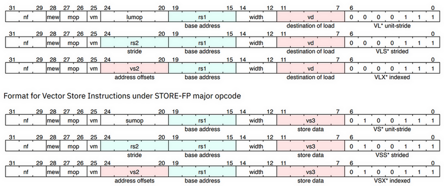
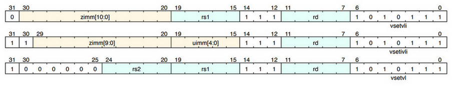

RISC-V Vector Extension
Table of Contents
1. RISC-V Vector Extension
https://github.com/riscv/riscv-v-spec/releases
当前最新的 rvv (risc-v vector extention) 是 rvv 1.0
1.1. setup
1.1.1. setup env
1.1.1.1. gcc
- https://github.com/riscv-collab/riscv-gnu-toolchain master 分支, commit 217e7f
- riscv-gcc 使用 riscv-gcc-rvv-next 分支, commit 005bf5
- riscv-binutils 使用 riscv-binutils-2.38 分支, commit 20756b
1.1.1.2. llvm
llvm upsteam 支持 rvv 1.0
1.1.1.3. qemu
qemu upstream 支持 rvv 1.0, 默认配置下需要运行时通过 `qemu-riscv64 -cpu rv64,v=true` 打开 rvv 支持
1.1.1.4. spike
- spike, commit 1cfffe
- pk, commit c7e75b
1.1.1.5. linux kernel
https://github.com/riscv-software-src/riscv-isa-sim/issues/505
https://lore.kernel.org/linux-riscv/cover.1652257230.git.greentime.hu@sifive.com/
目前 linux (ubuntu 22.04 for riscv) 还不支持 rvv, 在 linux 上使用 rvv 指令会直接 illegal instruction, 因为相应的 mstatus 等寄存器没有初始化.
为了支持 rvv, linux 需要处理上下文切换时和 rvv 相关的寄存器.
但存在一些第三方的 kernel 例如 https://github.com/T-head-Semi/linux 对 rvv 有支持
1.1.2. build and run
#include <riscv_vector.h> #include <stdio.h> void vec_add_rvv(int *a, int *b, int *c, size_t n) { size_t vl; vint32m2_t va, vb, vc; for (; vl = vsetvl_e32m2(n); n -= vl) { vb = vle32_v_i32m2(b, vl); vc = vle32_v_i32m2(c, vl); va = vadd_vv_i32m2(vb, vc, vl); vse32_v_i32m2(a, va, vl); a += vl; b += vl; c += vl; } } int x[10] = {1, 2, 3, 4, 5, 6, 7, 8, 9, 0}; int y[10] = {0, 9, 8, 7, 6, 5, 4, 3, 2, 1}; int z[10]; int main() { int i; vec_add_rvv(z, x, y, 10); for (i = 0; i < 10; i++) printf("%d ", z[i]); printf("\n"); return 0; }
$> /opt/riscv-rvv/bin/riscv64-unknown-linux-gnu-gcc test.c -march=rv64gv -static $> /opt/riscv-rvv/bin/spike --isa=RV64GCV /opt/riscv-rvv/riscv64-unknown-elf/bin/pk64 a.out bbl loader 1 11 11 11 11 11 11 11 11 1 $> qemu-riscv64 -cpu rv64,v=true,vlen=256 ./a.out 1 11 11 11 11 11 11 11 11 1
1.2. rvv 1.0
1.2.1. register
- v0..v31, 共 32 个 vector 寄存器, 每个寄存器的宽度由 VLEN 确定, 例如 256 bit
vtype, 主要包括 vsew[2:0] (SEW, selected element width) 和 vlmul[2:0] (LMUL, group multiplier) 以及 ta (tail agonostic) 和 ma (mask agonostic)
vsew 可以表示 8/16/32/64
vmul 可以表示 1/8, 1/4, 1/2, 1, 2, 4, 8
ta 表示 vr 尾部因为 vl 的原因不需要计算的部分是否需要保持不变 (例如 VLMAX 为 32, 但 vl 指定为 30, 则 vr 最后的两个元素是不需要计算的)
ma 表示因为 mask 被忽略的元素是否需要保持不变
- vl, vector length, 表示向量操作要操作的元素个数, 不能超过 VLEN*LMUL/SEW, 这个限制称为 VLMAX
1.2.2. vsetvl
vset{i}vl{i} 用来设置 vl 和 vtype, 会影响后续的向量操作
li t0, 10 vsetvli <rd>, <rs1>, e8, m1, ta, ma
<rs1> 是期望的 vl, <rd> 在实际的 vl, vsetvli 会设置 vl 为 `min(<rs1>, VLMAX)`, 同时把 vl 通过 <rd> 返回. 这种设置类似高级语言中类似的代码:
int len = 1021; int data[len] = {0}; /* * 32 类似于 VLMAX * max 相当于 vsetvli */ do { int seg = min(len, 32); /* process data[0..seg] */ data += seg; len -= seg; } while (len > 0)
`e8` 表示 vsew 的值, 可以选择 e8, e16, e32, e64, 对应 8/16/32/64 bit 的 SEW
`m1` 表示 vlmul 的值, 可以选择 mf8, mf4, mf2, m1, m2, m4, m8, 对应 1/8, 1/4, 1/2, 1, 2, 4, 8
`ta` 表示 vta (vector tail agonostic), 可以选择 ta, tu, 其中 ta 表示结尾不需要处理的数据不需要保持原来的值, `tu` 表示需要保持
`ma` 表示 vma (vector mask agonostic), 可以选择 ma, mu
vset{i}vl{i} 的第一个 i 表示关于 vl 的部分是否使用 imm, 第二个 i 表示关于 vtype 的部分是否使用 imm, 例如:
## t1 是之前保存的 vtype vsetivl t0, 10, t1 vsetivli t0, 10, e8, m2 ## t2 保存着要求的 vl vsetvl t0, t2, t1 vsetvli t0, t2, e8 ,2, ta, mu
一般情况下都使用 vsetvli, vsetvl 一般只在上下文切换时使用(用来恢复 vl 和 vtype)
1.2.2.1. example
.global main .text main: addi sp, sp, -4 sw ra, 4(sp) ## VLEN 为 256, 使用 e8 时单个 vector register 能容纳的元素个数是 32, 通过调用 vlmul 为 m2 ## 可以一次使用两个 vr 来操作 64 个 byte li t0, 64 vsetvli a1, t0, e8, m2 la t0, origin ## vle8.v 用来从 t0 起始地址 load 数据到 v0, 具体 load 多少数据由 vl 决定, 这里是 64 ## 如果这里指定 v1, 会出现 illegal instruction. ## 因为使用 m2, 所以 riscv 会隐式的使用 (v0, v1) 两个寄存器来保存 64 个 byte. 这里指令里使用 ## v0, v2, v4 ... 都可以, 但使用 v1, v3, v5 ... 会报错. 同理, m4 时只能使用 v0, v4, v8, ... vle8.v v0, (t0) ## vsaddu.vi 把 64 个 byte 全部加 1 vsaddu.vi v0, v0, 1 ## vse8.v 把 64 个 byte 写回到 (t0) vse8.v v0, (t0) la a0, msg lb a1, 63(t0) lb a2, 62(t0) lb a3, 61(t0) lb a4, 60(t0) call printf li a0, 0 lw ra, 4(sp) addi sp, sp, 4 jr ra .data origin: .rep 64 .byte 1 .endr msg: .asciz "%d %d %d %d\n"
.global memcpy # void *memcpy(void* dest, const void* src, size_t n) # a0=dest, a1=src, a2=n memcpy: mv a3, a0 loop: vsetvli t0, a2, e8, m8, ta, ma vle8.v v0, (a1) add a1, a1, t0 sub a2, a2, t0 vse8.v v0, (a3) add a3, a3, t0 bnez a2, loop ret
1.2.3. mask
大多数 rvv 指令 (除了 vsetvl) 都支持一个 vm 标志, 表示是否使用 mask
## 不使用 mask vop.v* v1, ... ## 使用 mask, 其中 mask 保存在 v0 中, 每 bit 代表一个 element 是否被 mask vop.v* v1, ..., v0.t
当前只能使用 v0 做 mask 寄存器
1.2.3.1. 操作 mask 的指令
1.2.3.1.1. mask and/or/not
- vmmand.mm vd, vs1, vs2
- vmor.mm
- vmxor.mm
- vmxnor.mm
- vmnor.mm
- …
vmclr.m vd
伪指令, 用来把 vd 清零, 相当于 vmxor.mm vd, vd, vd
vmset.m vd
伪指令, 用来把 vd 全部置 1, 相当于 vmxnor.mm vd, vd, vd
- Backlinks
RISC-V Vector Extension (RISC-V Vector Extension > rvv 1.0 > insns > 算术运算 > mask): mask
1.2.3.1.2. 根据条件设置 mask
- vmseq (vector mask set equal):
vmseq.vv vd, vs1, vs2
.vv 表示 vs1, vs2 都是 vector
vmseq.vx vd, vs1, rs1
.vx 表示 rs1 是 scalar
vmseq.vi vd, vs1, imm
.vi 表示 imm 是 immediate
- vmsne (vector mask set not equal)
- vmsltu
- vmslt
- vmsleu
- vmsle
- …
- vmfeq
- vmfne
- …
- Backlinks
RISC-V Vector Extension (RISC-V Vector Extension > rvv 1.0 > insns > 算术运算 > mask compare): mask compare
1.2.3.2. example
## /opt/riscv-rvv/bin/riscv64-unknown-elf-gcc -march=rv64gv ./main.S -O0 -g .global main .text main: addi sp, sp, -4 sw ra, 4(sp) li t0, 4 vsetvli a1, t0, e8 la t0, origin vle8.v v1, (t0) vmclr.m v0 ## 只有等于 1 的才会被 mask vmseq.vi v0,v1,1 ## 使用 mask, 最后的结果为 2,2,0,2 (而不是 2,2,1,2) vsaddu.vi v1, v1, 1, v0.t vse8.v v1, (t0) la a0, msg lb a1, (t0) lb a2, 1(t0) lb a3, 2(t0) lb a4, 3(t0) call printf li a0, 0 lw ra, 4(sp) addi sp, sp, 4 jr ra .data origin: .byte 1 .byte 1 .byte 0 .byte 1 msg: .asciz "%d %d %d %d\n"
1.2.4. insns
所有的 rvv 指令分为三大类:
- setvl
- load/store
- 数学运算
1.2.4.1. load/store

load/store 又根据 memory addressing model 分为三类指令:
- unit strided
- strided
- indexed
其中 mop field 用来区别不同类型的 load/store
1.2.4.1.1. strided load/store
vector load/store 时支持 stride 参数, 通过 stride, 可以很容易的处理 `矩阵按列取数据` 这类问题
普通的 load/store 指令是:
- vle{8,16,32,64}.v vd, (rs1)
- vse{8,16,32,64}.v vd, (rs1)
带 stride 的 load/store 指令为:
- vlse{8,16,32,64}.v vd, (rs1), rs2
- vsse{8,16,32,64}.v vd, (rs1), rs2
其中 rs2 用来保存 stride
- example
.global main .text main: addi sp, sp, -4 sw ra, 4(sp) li t0, 2 vsetvli a1, t0, e8 la t0, origin ## vector 只有两个元素 li t2, 2 ## stride 为 2, 所以 vector 中元素对应 origin[0, 2] vlse8.v v1, (t0), t2 vsaddu.vi v1, v1, 1 ## 最终结果为 2,1,2,1, 而不是 2,2,1,1 vsse8.v v1, (t0),t2 la a0, msg lb a1, (t0) lb a2, 1(t0) lb a3, 2(t0) lb a4, 3(t0) call printf li a0, 0 lw ra, 4(sp) addi sp, sp, 4 jr ra .data origin: .byte 1 .byte 1 .byte 1 .byte 1 msg: .asciz "%d %d %d %d\n"
1.2.4.1.2. indexed load/store
indexed load/store 可以接受一个 index vector, 相当于一个更灵活的 strided load/store
相关指令有:
vl{u,o}xei{8,16,32,64}.v vd, (rs1), vs2
indexed load, vs2 是 index vector
vs{u,o}xei{8,16,32,64}.v vd, (rs1), vs2
indexed store, vs2 是 index vector
- example
.global main .text main: addi sp, sp, -4 sw ra, 4(sp) li t0, 2 vsetvli a1, t0, e8 ## index vector 为 [0,2], 所以只有 origin[0,2] 会被 load/store ## 最后输出结果为 2,1,2,1 la t1, index vle8.v v2, (t1) la t0, origin vloxei8.v v1, (t0), v2 vsaddu.vi v1, v1, 1 vsoxei8.v v1, (t0),v2 la a0, msg lb a1, (t0) lb a2, 1(t0) lb a3, 2(t0) lb a4, 3(t0) call printf li a0, 0 lw ra, 4(sp) addi sp, sp, 4 jr ra .data origin: .rep 4 .byte 1 .endr index: .byte 0 .byte 2 msg: .asciz "%d %d %d %d\n"
1.2.4.2. setvl

1.2.4.3. 算术运算
根据算术运算的参数不同, 指令有不同的后缀:
- v<op>.vv vd, vs1, vs2
- v<op>.vx vd, vs1, rs2
- v<op>.vi vd, vs1, imm
- vf<op>.vv vd, vs1, vs2
- vf<op>.vx vd, vs1, rs1
另外, 某些使用 mask 的指令例如 vmerge 会使用 .m 后缀, 例如 vmerge.vvm
1.2.4.3.1. integer add sub
- vadd.{} vd, …
- vsub.{} vd, …
1.2.4.3.2. bitwise
- vand.{}
- vor.{}
- vxor.{}
1.2.4.3.3. shift
- vsll.{}
- vsrl.{}
- vsra.{}
1.2.4.3.4. mask compare
1.2.4.3.5. min/max
- vmin{u,}.{vv,vx}
- vmax{u,}.{vv,vx
1.2.4.3.6. multiply/divide
- vmul{h,hu,hsu,}.{vv,vx}
- vdiv{u,}.{vv,vx}
- vrem{u,}.{vv,vx}
1.2.4.3.7. accumulate
- vmacc.{vv,vx}
- vnmsac.{vv,vx}
- vmadd.{vv,vx}
- vnmsub.{vv.vx}
1.2.4.3.8. merge
vmerge.vvm vd, vs1, vs2, v0
vd[i] = v0.mask[i] ? vs1[i] : vs2[i]
- vmerge.{vx,vi}m
1.2.4.3.9. move
- vmv.v.{v,x,i}
1.2.4.3.10. reduction
- vredsum.vs
- vred{max,min}.vs
- vred{and,or,xor}.vs
1.2.4.3.11. permutation
- vmv.x.s rd, vs1
- vmv.s.x vd, rs1
1.2.4.3.12. floating point
- vfadd.{vv,vf}
- vfsub.{vv,vf}
- vfmul.{vv,vf}
- vfdiv.{vv,vf}
- vfmacc.{vv,vf}
- vfsqrt.v vd, vs1
- vfmin.{vv,vf}
- vfmax.{vv,vf}
- vmfeq.{vv,vf}
- vmfne.{vv,vf}
- vfmerge.vfm
- vfmv.v.f vd, rs1
- example
.global main .text main: addi sp, sp, -4 sw ra, 4(sp) li t0, 4 vsetvli a1, t0, e64 la t0, origin vle64.v v1, (t0) la t1, inc fld fa0, (t1) vfadd.vf v1, v1, fa0 vse64.v v1, (t0) la a0, msg ld a1, (t0) ld a2, 8(t0) ld a3, 16(t0) ld a4, 24(t0) call printf li a0, 0 lw ra, 4(sp) addi sp, sp, 4 jr ra .data inc: .double 2.0 origin: .rep 4 .double 1.0 .endr msg: .asciz "%f %f %f %f\n"
1.2.4.3.13. mask
1.3. gcc rvv intrinsic
https://github.com/riscv-non-isa/rvv-intrinsic-doc
每个类型和函数都需要指明 sew 和 lmul, 显得有些烦琐, 例如 vadd_vv_i8m1, i8 表示 sew 为 8, m1 表示 mul 为 1
1.3.1. 数据类型
v{int{8,16,32,64}, uint{8,16,32,64},float{16,32,64}}m{f8,f4,f2,1,2,4,8}_t
例如:
vint8m1_t, vfloat32mf8_t
1.3.2. 函数原型
setvl:
- vsetvl_e{8,16,32,64}m{f8,f4,f2,1,2,4,8}(size_t avl)
unit-stride:
- vle{8,16,32,64}_vi,u{8,16,32,64}m{}(base, size)
- vle{16,32,64}_v_f{16,32,64}m{}()
strided:
- vlse{8,16,32,64}_vi,u{8,16,32,64}m{}(base, stride,size)
- vlse{16,32,64}_v_f{16,32,64}m{}()
unit-stride mask:
- vle{8,16,32,64}_vi,u{8,16,32,64}m{}_m(mask, maskoff,base, size)
- vle{8,16,32,64}_v_f{16,32,64}m{}_m(mask, maskoff,base, size)
strided mask:
- vlse{8,16,32,64}_vi,u{8,16,32,64}m{}_m(mask, maskoff, base, stride,size)
- vlse{16,32,64}_v_f{16,32,64}m{}_m()
indexed:
- vl{u,o}xei{8,16,32,64}_vi,u{8,16,32,64}m{}(base, index, vl)
- vl{u,o}xei{8,16,32,64}_v_f{16,32,64}m{}(base, index, vl)
indexed mask:
- vl{u,o}xei{8,16,32,64}_vi,u{8,16,32,64}m{}_m(mask, maskoff,base, index, vl)
- vl{u,o}xei{8,16,32,64}_v_f{16,32,64}m{}_m(mask, maskoff,base, index, vl)
arithmetic:
- vadd_vv_i{8,16,32,64}m{}(op1, op2, vl)
- vadd_vx_i{8,16,32,64}m{}(op1, op2, vl)
- …
masked arithmetic:
- vadd_vv_i8mf8_m (mask, maskedoff, op1, op2, vl)
- vint8mf8_t vadd_vx_i8mf8_m (mask, maskedoff, op1, op2, vl)
- …
1.3.3. impls
1.4. example
1.4.1. matmul with rvv assembly:
.global matmul .global main .text #define row_index s3 #define col_index s4 #define tmp t0 matmul: #define vlen s0 #define a_offset s1 #define b_offset s2 #define remain s6 li row_index, 0 .Louter: li col_index, 0 .Linner: mul tmp, row_index, a4 slli a_offset, tmp, 2 add a_offset, a_offset, a0 slli b_offset, col_index, 2 add b_offset, b_offset, a1 mv vlen, a4 mv remain, a4 .Lloop: vsetvli vlen, remain, e32 ## load a vle32.v v0, (a_offset) slli tmp, vlen, 2 add a_offset, a_offset, tmp ## load b slli tmp, a5, 2 vlse32.v v1, (b_offset), tmp mul tmp, tmp, vlen add b_offset, b_offset, tmp ## calc sub remain, remain, vlen vmul.vv v0, v0, v1 vredsum.vs v2, v0, v2 bnez remain, .Lloop ## save result vmv.x.s tmp, v2 vmv.s.x v2, zero sw tmp, (a2) addi a2, a2, 4 addi col_index, col_index, 1 blt col_index, a5, .Linner addi row_index, row_index, 1 blt row_index, a3, .Louter ## finish ret dump: addi sp, sp, -4 sw ra, 4(sp) #define buf s0 #define total_row s1 #define total_col s2 mv buf, a0 mv total_row, a1 mv total_col, a2 mv row_index, zero 2: mv col_index, zero 1: la a0, fmt lw a1, (buf) addi buf, buf, 4 call printf addi col_index, col_index, 1 blt col_index, total_col, 1b la a0, newline call printf addi row_index, row_index, 1 blt row_index, total_row, 2b lw ra, 4(sp) addi sp, sp, 4 ret main: addi sp, sp, -4 sw ra, 4(sp) la a0, a la a1, b la a2, c li a3, 2 li a4, 3 li a5, 2 call matmul la a0, c li a1, 2 li a2, 2 call dump lw ra, 4(sp) addi sp, sp, 4 ret .data a: .word 1 .word 2 .word 3 .word 4 .word 5 .word 6 b: .word 1 .word 2 .word 3 .word 4 .word 5 .word 6 c: .word 0 .word 0 .word 0 .word 0 fmt: .asciz "%d " newline: .asciz "\n"
1.4.2. matmul with rvv intrinsic:
// 2022-05-06 09:49 #include <riscv_vector.h> #include <stdio.h> /* c=a@b, a.shape=[x,y] b.shape=[y,z], c.shape=[x,z] */ void matmul(int *a, int *b, int *c, int x, int y, int z) { int tmp[] = {0, 0, 0}; for (int i = 0; i < x; i++) { for (int j = 0; j < z; j++) { int *a_offset = a + i * y; int *b_offset = b + j; vint32m1_t accu = vmv_v_x_i32m1(0, 1); int remain = y; while (remain != 0) { int vlen = vsetvl_e32m1(remain); vint32m1_t aa = vle32_v_i32m1(a_offset, vlen); vint32m1_t bb = vlse32_v_i32m1(b_offset, z * 4, vlen); vint32m1_t cc = vmul_vv_i32m1(aa, bb, vlen); accu = vredsum_vs_i32m1_i32m1(accu, cc, accu, vlen); a_offset += vlen; b_offset += vlen * z; remain -= vlen; } int result = vmv_x_s_i32m1_i32(accu); *(c++) = result; } } } int main(int argc, char *argv[]) { int a[] = {1, 2, 3, 4, 5, 6}; int b[] = {1, 2, 3, 4, 5, 6}; int c[] = {0, 0, 0, 0}; matmul(a, b, c, 2, 3, 2); for (int i = 0; i < 2; i++) { for (int j = 0; j < 2; j++) { printf("%d ", c[i * 2 + j]); } printf("\n"); } }
1.5. gcc rvv auto vectorization
// 2022-05-06 13:39 int __attribute__((noinline)) foo(int *__restrict a, int *__restrict b, int len) { for (int i = 0; i < len; i++) { a[i] += b[i]; } return a[0]; } int main(int argc, char *argv[]) { int a[] = {1, 2, 3, 4, 5, 6}; int b[] = {1, 2, 3, 4, 5, 6}; return foo(a, b, 6); }
代码使用了 __restrict 关键字, 告诉编译器不需要考虑 a 和 b 有重叠的情况, 参考
Strict Aliasing
$> /opt/riscv-rvv/bin/riscv64-unknown-elf-gcc -march=rv64gcv ./rvv.c -g -mrvv -ftree-vectorize -O2 $> /opt/riscv-rvv/bin/riscv64-unknown-elf-objdump -d ./a.out ... 00000000000101aa <foo>: 101aa: 02c05363 blez a2,101d0 <foo+0x26> 101ae: 87aa mv a5,a0 101b0: c2202773 csrr a4,vlenb 101b4: 050676d7 vsetvli a3,a2,e32,m1,ta,mu 101b8: 0207ec07 vle32.v v24,(a5) 101bc: 0205ec87 vle32.v v25,(a1) 101c0: 038c8c57 vadd.vv v24,v24,v25 101c4: 0207ec27 vse32.v v24,(a5) 101c8: 8e15 sub a2,a2,a3 101ca: 95ba add a1,a1,a4 101cc: 97ba add a5,a5,a4 101ce: f27d bnez a2,101b4 <foo+0xa> 101d0: 4108 lw a0,0(a0) 101d2: 8082 ret ...
1.6. misc
1.6.1. vector vs. simd
1.6.2. RISC-V P Extension
RISC-V DSP (P) Extension Proposal
p extension: Packed-SIMD DSP extension operating on XLEN-bit integer registers for embedded RISC-V processors
- p 扩展不支持 floating point, 它主要面向定点化的 dsp 算法
- p 扩展使用普通的 GPR 寄存器, 所以它的宽度就是寄存器的宽度, 例如 RV64 上就是 64 bit, 比 128 bit 的 neon 指令要小
- p 扩展支持 add, shift, mul, min, max 以及 cross add and sub 等 simd 计算, 但都是 element wise 的操作, 不存在 vector 中的 reduce 类指令, 也没有 mask, stride, index 等操作
- p 扩展支持一些 dsp (non-simd) 计算, 例如 ave (计算两个 gpr 的均值), ksubh (两个 gpr 的 q15 饱和加法)
Backlinks
GCC Backend (GCC Backend > misc > intrinsic): 通过 intrinsic 可以扩展 gcc 以支持 backend 自定义指令. 例如, 假设 backend 包含许 多 dsp 指令 (例如 RISC-V P Extension), 那么支持它有两种方式:
SIMD (SIMD > RISC-V > RISC-V P Extension): RISC-V P Extension
Backlinks
RISC-V Tutorial (RISC-V Tutorial > Standard Extention > RV32V): RISC-V Vector Extension
SIMD (SIMD > RISC-V > RISC-V Vector Extension): RISC-V Vector Extension
Tensorflow Architecture: Parallism (Tensorflow Architecture: Parallism > Parallelism > 后续工作): 利用 RISC-V 的 vector 或 SIMD 指令加速 eigen 的 CPU device, 现在 `Eigen/src/Core/arch` 下已经包含 NEON, SSE, AVX, AVX512 等.